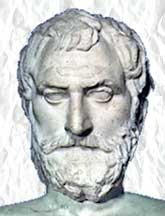
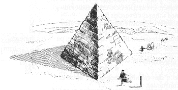
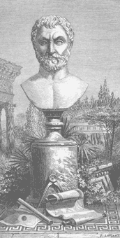

| Born | Approximately 624 BC, Miletus, Asia Minor. (Now Balat, Turkey) |
| Died | Approximately 547 BC |
Thales, an engineer by trade, was the first of the Seven Sages, or wise men of Ancient Greece. Thales is known as the first Greek philosopher, mathematician and scientist. He founded the geometry of lines, so is given credit for introducing abstract geometry.
He was the founder of the Ionian school of philosophy in Miletus, and the teacher of Anaximander. During Thales' time, Miletus was an important Greek metropolis in Asia Minor, known for scholarship. Several schools were founded in Miletus, attracting scientists, philosophers, architects and geographers
It is possible that Thales has been given credit for discoveries that were not really his. He is known for his theoretical as well as practical understanding of geometry. Thales is acknowledged by a number of sources as the one who defined the constellation Ursa Minor and used it for navigation. Some believe he wrote a book on navigation, but it has never been found.
Two letters and some verses of Thales are quoted by Diogenes Laertius in his Lives of the Philosophers. Much of what we know of Thales as a philosopher comes from Aristotle. Herodotus, who lived approximately sixty years after Thales, also wrote about him, as did Eudemus, the first major historian of mathematics. Proclus, who wrote in about 450 AD, cited Eudemus' History of Geometry, now lost, as his source. Thales is credited with introducing the concepts of logical proof for abstract propositions.
Thales went to Egypt and studied with the priests, where he learned of mathematical innovations and brought this knowledge back to Greece. Thales also did geometrical research and, using triangles, applied his understanding of geometry to calculate the distance from shore of ships at sea. This was particularly important to the Greeks, whether the ships were coming to trade or to do battle. Thales advised Anaximander's student, Pythagoras, to visit Egypt in order to continue his studies in mathematics and philosophy.

While Thales was in Egypt, he was supposedly able to determine the height of a pyramid by measuring the length of its shadow when the length of his own shadow was equal to his height. Thales learned about the Egyptian rope-pullers and their methods of surveying land for the Pharaoh using stakes and ropes. Property boundaries had to be re-established each year after the Nile flooded. After Thales returned to Greece about 585 BC with notes about what he had learned, and Greek mathematicians translated the rope-and-stake methods of the rope pullers into a system of points, lines and arcs. They also took geometry from the fields to the page by employing two drawing tools, the straightedge for straight lines and the compass for arcs. (See Constructions with compass and straightedge). The Greeks named their paper explorations "geometry" for "earth measure," in honor of the Egyptians from whom the knowledge came.

Thales is credited with the following five theorems of geometry:
The Egyptians and Babylonians must have understood the above theorems, but there is no known recorded proof before Thales. He used two of his earlier findings -- that the base angles of an isosceles triangle are equal, and the total sum of the angles in a triangle equals two right angles -- in order to prove theorem #5. According to Diogenes Laertius, when Thales discovered this theorem, he sacrificed an ox!
Thales bridged the worlds of myth and reason with his belief that to understand the world, one must know its nature ('physis', hence the modern 'physics'). He believed that all phenomena could be explained in natural terms, contrary to the popular belief at the time that supernatural forces determined almost everything. Thales professed it was "not what we know, but how we know it" (the scientific method). His contributions elevated measurements from practical to philosophical logic.
There are many recorded tales about Thales, some complimentary and others critical: